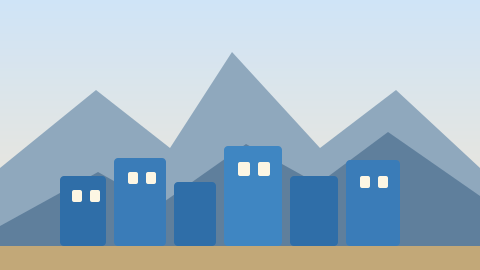

شفشاون مدينة تسير فيها على قدميك، وهذا أهم ما يجب أن تعرفه قبل الوصول. سيارات قليلة داخل الأزقة، وممرات ضيقة مختلفة الارتفاع، ولذلك احسب حساب المشي قبل كل شيء آخر.
قبل الوصول: أربعة قرارات
- أين تنام: داخل المدينة العتيقة (تجربة كاملة لكن أصوات مبكرة وتجهيزات قديمة) أو خارجها بضعة دقائق مشياً (هدوء ومساحة سيارة).
- ليالٍ كافية: ثلاث ليالٍ كافية للأزقة والجبل، لا تُقصّرها إلى ليلة واحدة.
- موسم الزيارة: الربيع والخريف أفضل من الصيف وأقل ازدحاماً.
- نقد نقدي: المصارف الخارجية ضعيفة داخل الأزقة؛ خذ نقوداً كافية قبل دخولها.
اليوم الأول: الأزقة والميدان
ابدأ مشياً من الباب الكبير ودخل على مهل. الخطة المقترحة:
- ٨:٣٠ صباحاً: مشي في الأزقة الزرقاء؛ الشوارع شبه خالية والصور فيها أوضح.
- ١٠:٣٠: الميدان الرئيسي للاستراحة وشرب الشاي؛ راقب النشاط اليومي لا السيّاح.
- ٢:٠٠ بعد الظهر: القصبة وبرجها لرؤية المدينة من الأعلى.
- الغروب: الصعود إلى أحد مرافق الزاوية المشرفة على الوادي لمشاهدة الشمس تغيب خلف القمم.
ترشيد الوقت مهم: أزقة المدينة العتيقة متشابهة للمرة الأولى، فاعتمد على علامات ثابتة (باب، ساحة، مسجد) بدل الاعتماد على الذاكرة وحدها.
اليوم الثاني: المشي الجبلي
خُذ اليوم للمسارات المحيطة، وهي أفضل جزء في الزيارة وأقلها ازدحاماً:
- مسار قصير: ساعتان إلى نقطة عالية تطل على المدينة، مناسب لمن يريد مشهداً كبيراً دون إجهاد.
- مسار متوسط: نصف يوم إلى إحدى القمم المجاورة؛ يحتاج حذاء بمقدمة عالية ورصيداً زمنياً بأربع ساعات.
- مسار الماء: النزول إلى الممر المائي أسفل المدينة، بعد ظهيرة حارة، مشهد مختلف تماماً.
| المسار | المدة | الاحتياج |
|---|---|---|
| نقطة الإطلالة القريبة | ساعتان | حذاء رياضي وماء كافٍ |
| القمة المجاورة | ٤–٥ ساعات | وجبة خفيفة ووقاية من الشمس |
| الممر المائي | ساعتان ونصف | حذاء لا يخاف البلل |
لا تمشِ منفرداً في المسارات البعيدة، وتأكد من آخر ساعة للعودة قبل الغروب؛ الظلام ينزل مبكراً بين الجبال.
اليوم الثالث: الأسواق والطعام والمغادرة
- الصباح: سوق المدينة لشراء الحرف اليدوية والفخار؛ قارن أسعار ثلاثة محلات قبل أن تشتري.
- الظهيرة: التمرغ في أحد المطاعم البسيطة القريبة من الساحة.
- بعد الظهر: جلسة قراءة في إحدى المقاهي الصغيرة، وهي طريقة كاملة لتوديع المدينة.
- المغادرة: احجز آخر وسيلة نقل في النهار، فالمسارات الجبلية في الليل أطول مما تظن.
ماذا تأكل ومن أين؟
- وجبة الفطور البسيطة: خبز وزيت زيتون وجبن طازج وشاي بالنعناع، من مخبزة صغيرة في الأزقة.
- الحد الرئيسي: الطبق المحلي في مطعم عائلي داخل المدينة، الأثمنة أوضح والأحجام أكبر.
- تجربة الشاي: في مقهى شعبي لا في مقهى سياحي؛ الفرق في الثمن والجو الكامل.
تقدير التكاليف (متوسط)
| البند | اقتصادي | مريح |
|---|---|---|
| الإقامة لليلة | ١٢٠–٢٥٠ درهماً | ٤٠٠–٧٠٠ درهم |
| الوجبات اليومية | ٨٠–١٥٠ درهماً | ٢٠٠–٣٥٠ درهماً |
| الأنشطة والمرشد | ٠–١٥٠ درهماً | ٣٠٠–٦٠٠ درهم |
احترام المكان
شفشاون مدينة يسكنها ناس، لا متحف مفتوح. لا تُصوّر الأشخاص دون إذن، لا تدخل الممرات الخاصة بالبيوت، واخفض صوتك في المساء. الهدوء الذي تحبّه فيها هو أساساً هدوء سكانها.
الخلاصة في ثلاث نقاط
- ثلاث ليالٍ كافية: يوم للأزقة، يوم للمشي الجبلي، ويوم للأسواق والطعام.
- المشي في الصباح الباكر يعطيك أفضل صورة وأقلّ ازدحام.
- خذ نقوداً كافية، ومشي الخلفي والمسارات الوعرة بحذاء مناسب.